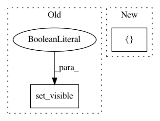

71b1e873e70dca43cd12870d4c0f497015f41970,examples/under-sampling/plot_illustration_tomek_links.py,,make_plot_despine,#Any#,23
Before Change
def make_plot_despine(ax):
ax.spines["top"].set_visible(False)
ax.spines["right"].set_visible(False)
ax.get_xaxis().tick_bottom()
ax.get_yaxis().tick_left()
ax.spines["left"].set_position(("outward", 10))
ax.spines["bottom"].set_position(("outward", 10))
After Change
def make_plot_despine(ax):
sns.despine(ax=ax, offset=10)
ax.set_xlim([0, 3])
ax.set_ylim([0, 3])
ax.set_xlabel(r"$X_1$")
ax.set_ylabel(r"$X_2$")
In pattern: SUPERPATTERN
Frequency: 4
Non-data size: 2
Instances
Project Name: scikit-learn-contrib/imbalanced-learn
Commit Name: 71b1e873e70dca43cd12870d4c0f497015f41970
Time: 2021-02-17
Author: g.lemaitre58@gmail.com
File Name: examples/under-sampling/plot_illustration_tomek_links.py
Class Name:
Method Name: make_plot_despine
Project Name: scikit-learn-contrib/imbalanced-learn
Commit Name: 71b1e873e70dca43cd12870d4c0f497015f41970
Time: 2021-02-17
Author: g.lemaitre58@gmail.com
File Name: examples/under-sampling/plot_illustration_nearmiss.py
Class Name:
Method Name: make_plot_despine
Project Name: matplotlib/matplotlib
Commit Name: d6fadfc1dc499416b31425c8f2ced5923bacb51f
Time: 2020-04-10
Author: anntzer.lee@gmail.com
File Name: lib/matplotlib/widgets.py
Class Name: TextBox
Method Name: _rendercursor
Project Name: arviz-devs/arviz
Commit Name: 2b46c162e0e0b35ad53536bfe8cac95f3d6d464c
Time: 2018-04-26
Author: aloctavodia@gmail.com
File Name: arviz/plots/energyplot.py
Class Name:
Method Name: energyplot